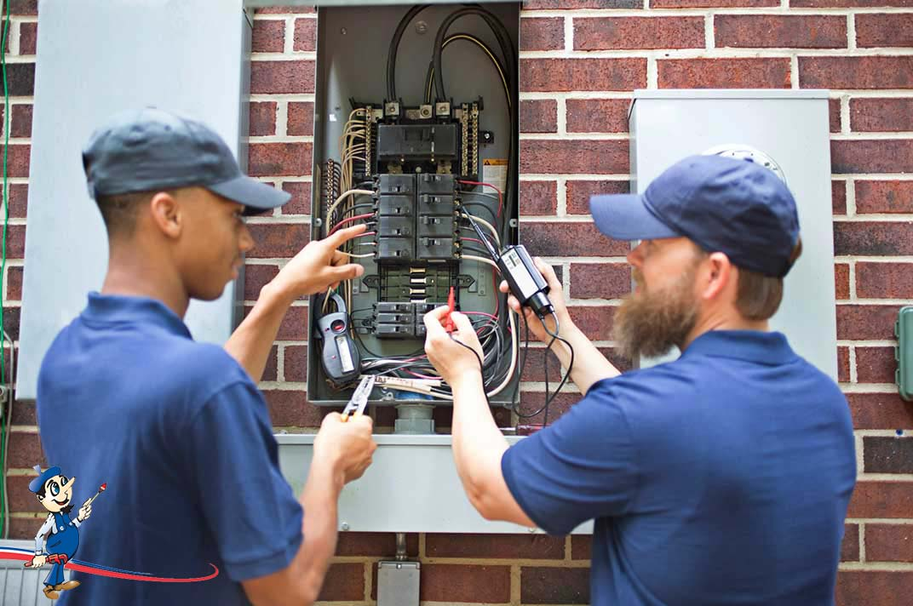

Maintenance and Repair
Repair Problems
Your landlord has to keep up your home so that it is fit to live in and in good repair. There are also statewide electrical, energy efficiency, fire, and health codes. Some cities and towns have local housing maintenance codes which have detailed maintenance rules that the landlord must meet. If you do not know if your town has a maintenance code, call the local building inspector or the town clerk.
Common repair problems are things like:
- Faulty or exposed wiring
- Leaky plumbing and bad drain
- Non-working appliances
- Broken windows, no screens, or no storm windows
- Falling plaster
- No deadbolt locks or smoke detectors
- Bugs or mice
Rent Escrow
If a landlord will not make the repairs, a tenant can file a Rent Escrow court case. Under the Rent Escrow law, tenants pay their rent to the court, instead of to the landlord, and ask the court to order the landlord to make repairs, follow the terms of the lease, or comply with state privacy laws.
Inspections
It is a good idea to have an inspection of your apartment if there is an inspector in your area. Even if you write a letter to your landlord asking for repairs, you still may want to call the housing inspector. Keep in mind that the inspector may give your landlord more than 2 weeks to fix the problems.
To ask for an inspection you should do the following:
- Contact the local housing inspector and ask for an inspection.
- During the inspection, walk through your place, room by room, with the inspector. Ask if there are state or local code violations in your place.
- Get a copy of the inspections report from the inspector. Also get a copy of the Order to Repair, if it is separate from the inspection report.
- Ask the inspector how long the landlord has to make the repairs ordered.
- If you are not satisfied with the inspection, complain to the inspector's supervisor. Ask the inspector for the name of his or her boss and their phone number. Call the number as soon as you can and tell them your concern.
- If repairs are not made as ordered, you can ask for another inspection to help prove the repairs were not made.
What the Court can do:
- Order the landlord to make repairs.
- Let you make the repairs and deduct the cost from your rent.
- Reduce your rent until the repairs are done.
- Order the landlord to pay back some or all of the rent you paid when the repairs weren't made.
- Order someone else to manage the home and make the repairs.
- Fine the landlord.
- Release the rent to you or to the landlord.
- Order the landlord to follow your lease.
- Order the landlord to comply with state privacy laws.
- Order the landlord to pay attorney's fees.